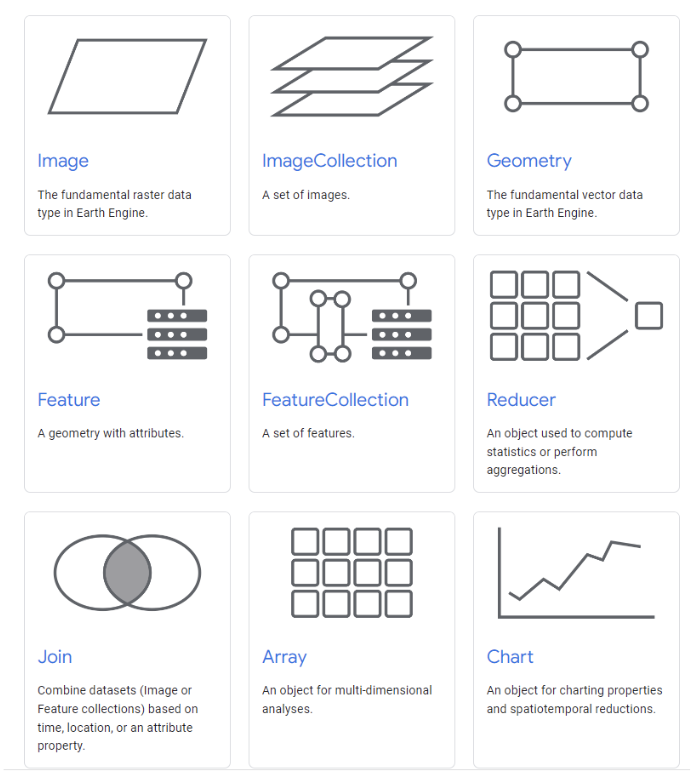
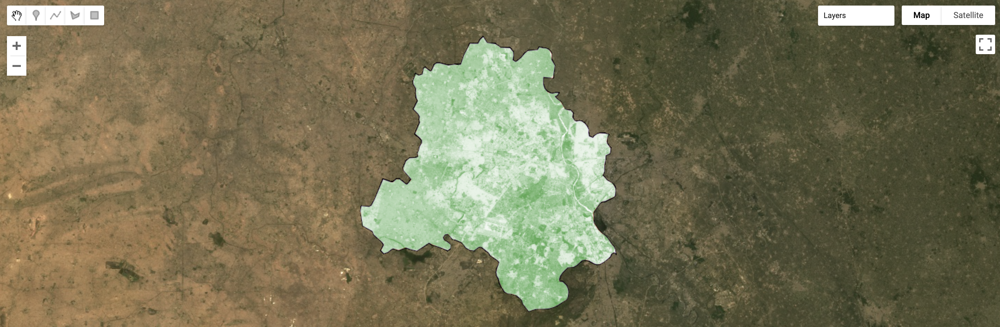

5 Intro to Google Earth Engine
5.1 Summary
This week, we had our first go at using Google Earth Engine (GEE). During the lecture, we covered GEE fundamentals, including an introduction to its basic object classes (Figure 1) and key terminology. We explored the advantages of using GEE, particularly its cloud-based processing capabilities, emphasizing the importance of minimizing loops and using server-side functions to optimize performance. It was impressive to hear about how the same task that would take hours to process in R can be executed in mere seconds using GEE. Some other important notes include the fact that GEE operates on a 256x256 grid system, where aggregation plays a crucial role in handling large datasets, and how the software automatically reprojects data.

We moved on to getting familiar with the GEE interface and typical processes, from geometry operations to machine learning. For the practical session, we experimented with some of these, including Principal Component Analysis (PCA) and Normalized Difference Vegetation Index (NDVI) calculations. This was my first time coding in Java, which came with its own learning curve. It was interesting to see the differences in working with R and Java particularly during PCA, where a process that would have taken just a single line in R actually was much less efficient in GEE. Figure 3 shows the NDVI output produced for Delhi.

Overall, it struck me that GEE makes remote sensing analysis a lot easier by reducing the need for local computing resources. On the other hand, its proprietary nature raises concerns. Given that Google owns and maintains the platform, there is always a risk that it could be restricted or discontinued, which is particularly problematic considering the growing reliance on GEE in research. The broader issue of depending on big tech firms for essential scientific tools is especially relevant in today’s political climate, where corporate decisions can have far-reaching consequences for research and data accessibility.
5.2 Applications
Google Earth Engine has seen a significant surge in adoption among researchers over the past decade, primarily due to its ability to efficiently handle big data and provide access to an extensive collection of satellite imagery and geospatial datasets from a single platform. Many of the articles I reviewed this week emphasize these advantages, particularly in terms of computational efficiency and accessibility.
One of GEE’s most notable strengths is its ability to drastically reduce processing time by leveraging cloud-based servers. This is especially beneficial when dealing with the “big data problem” posed by heterogeneous satellite imagery collected from multiple sensors, which would otherwise require substantial local computing power (Zhao et al. 2021). By enabling large-scale analysis that would be prohibitively time-consuming on traditional systems, GEE has become an invaluable tool in remote sensing research. For instance, in assessing the efficiency of GEE in crop mapping, Sheletov et al. (@-shelestovExploringGoogleEarth2017) found that Google Earth Engine was highly effective in enabling access to remote sensing products and provided robust pre-processing capabilities.
Beyond computational speed, another major advantage of GEE is its accessibility, which democratizes access to high-level geospatial analysis and enables researchers to conduct long-term, large-scale studies that would typically be computationally prohibitive. The ability to analyze long-term environmental trends is particularly powerful in studies of land use and land cover change. Researchers have used GEE to investigate transformations in various ecosystems, from tracking land cover changes near river basins (Zurqani et al. 2018) to monitoring global forest change over decades (Hansen et al. (2013)). Work by Hansen et al. [@-hansenHighResolutionGlobalMaps2013] work particularly stood out to me, showcasing GEE’s capability to process massive datasets at a global scale, which would be nearly impossible with conventional GIS and remote sensing tools.
Given the benefits to using GEE, it doesn’t come as much of a surprise that many earth observation researchers prefer this tool today. Its ability to streamline complex analyses while providing easy access to datasets has transformed the way large-scale earth observation studies are conducted.
5.3 Reflection
This week highlighted many of the advantages of GEE, particularly its efficiency in data access and processing. Through this week’s lecture, practical, and reviewed literature, it became clear that GEE is an exciting tool that opens up many avenues for research. However, it is equally important to acknowledge some of the platform’s limitations.
A key concern, as mentioned in the summary, is that Google has full control over GEE. If the company were to restrict or eliminate free access in the future, researchers who rely heavily on the platform could face significant challenges. As we’ve seen throughout this course, Earth observation research plays a crucial role in informing policy, particularly in environmental and urban planning. To ensure the continuity of their work, researchers should avoid over-reliance on GEE and maintain proficiency in alternative tools as well. Open-source programs like R, for instance, provide greater long-term stability. This raises broader questions about the role of private corporations in shaping access to scientific data and analytical tools. While GEE currently serves as a powerful resource, dependency on Google’s infrastructure underscores the importance of advocating for more open-access platforms.
As I begin to work more with GEE, I am increasingly I am increasingly curious about the differences with R, and the respective advantages and disadvantages of each. As we saw in the practical this week, while GEE excels in handling large datasets and reducing processing time, R can sometimes be more efficient for specific analytical tasks. To me, this fact reinforced the importance of being familiar with multiple tools to select the best approach for a given research question. Personally, I currently feel more comfortable with R due to my greater experience with it and would likely default to it unless working with particularly large or computationally intensive datasets. It will be interesting to see how my perspective changes as I continue to explore and work with GEE.